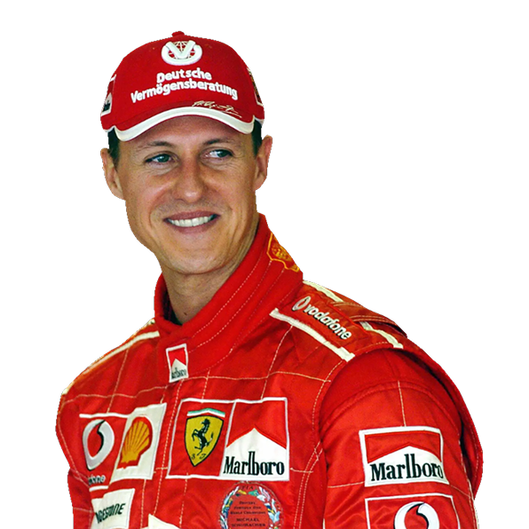

FERRARI X SCHUMACHER
A Legacy Forged in Maranello
From the moment Michael Schumacher donned the Rosso Corsa in 1996, he and Ferrari rewrote the record books. Explore their journey: the victories, the innovations, and the bond that transcended motorsport.
DISCOVER THE TIMELINE →ABOUT
A PARTNER LIKE NO OTHER
When Michael Schumacher joined Ferrari in late 1995, he team had endured nearly two decades without a Drivers’ Championship. Over the next nine seasons (1996–2006), Schumacher’s record-breaking five straight world titles (2000–2004) would revive the Prancing Horse and cement his status as the sport’s greatest. This site honors their shared milestones, technical innovations, and the spirit of excellence that defined an era.
PROFILE
MICHAEL SCHUMACHER
3 January 1969, Hürth, Germany
Michael Schumacher (b. 1969) is a German F1 icon who propelled Ferrari to five straight drivers’ titles (2000–2004) and six constructors’ crowns (2000–2005). His relentless work ethic and technical mastery reshaped the sport’s standards.
 READ PROFILE →CAREER
From Michael Schumacher’s karting triumphs as a rising prodigy to his domination of Formula 1, this section charts the full timeline of his racing career—highlighting each championship victory, tally of podium finishes, and unforgettable moments on track. Delve into the milestones that turned a young talent into a record-breaking legend.